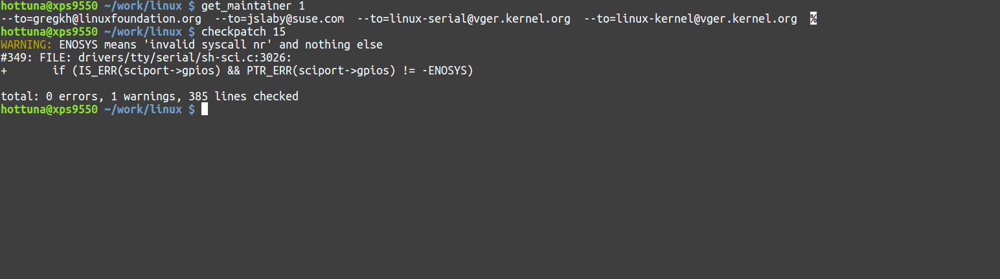

Linux kernel development shell scripts
Fri 03 June 2016
While upstreaming kernel patches scripts/checkpatch.pl and scripts/get_maintainer.pl often come in handy. But to me the interface they provide is slightly bulky and rely on using patch files instead of git commits, which to me is a bit inconvenient.
These scripts are all meant to be included in .bashrc or .zshrc
scripts/checkpatch.pl helper
1 2 3 4 5 6 7 8 9 10 11 | #!/bin/bash
function checkpatch {
if [ -z ${1+x} ]; then
exec git diff | scripts/checkpatch.pl --no-signoff -q -
elif [[ $1 == *"cache"* ]]; then
exec git diff --cached | scripts/checkpatch.pl --no-signoff -q -
else
NUM_COMMITS=$1
exec git diff HEAD~$NUM_COMMITS..HEAD | scripts/checkpatch.pl --no-signoff -q -
fi
}
|
The checkpatch script simple wraps the patch creation process and allows you to right away specify which
Example
~/work/linux $ checkpatch 15
WARNING: ENOSYS means 'invalid syscall nr' and nothing else
#349: FILE: drivers/tty/serial/sh-sci.c:3026:
+ if (IS_ERR(sciport->gpios) && PTR_ERR(sciport->gpios) != -ENOSYS)
total: 0 errors, 1 warnings, 385 lines checked
In this example the 15 last commits are checked against scripts/checkpatch.pl for correctness.
scripts/get_mainteiner.pl helper
1 2 3 4 5 6 7 8 9 10 11 12 13 14 15 16 17 18 19 | #!/bin/bash
function get_maintainer {
NUM_COMMITS=$1
MAINTAINERS=$(git format-patch HEAD~$NUM_COMMITS..HEAD --stdout | scripts/get_maintainer.pl)
# Remove extraneous stats
MAINTAINERS=$(echo "$MAINTAINERS" | sed 's/(.*//g')
# Remove names from email addresses
MAINTAINERS=$(echo "$MAINTAINERS" | sed 's/.*<//g')
# Remove left over character
MAINTAINERS=$(echo "$MAINTAINERS" | sed 's/>//g')
echo "$MAINTAINERS" | while read email; do
echo -n "--to=${email} ";
done
}
|
Example
~/work/linux $ get_maintainer 1
--to=gregkh@linuxfoundation.org --to=jslaby@suse.com --to=linux-serial@vger.kernel.org --to=linux-kernel@vger.kernel.org
~/work/linux $ git send-email -1 $(get_maintainer 1)